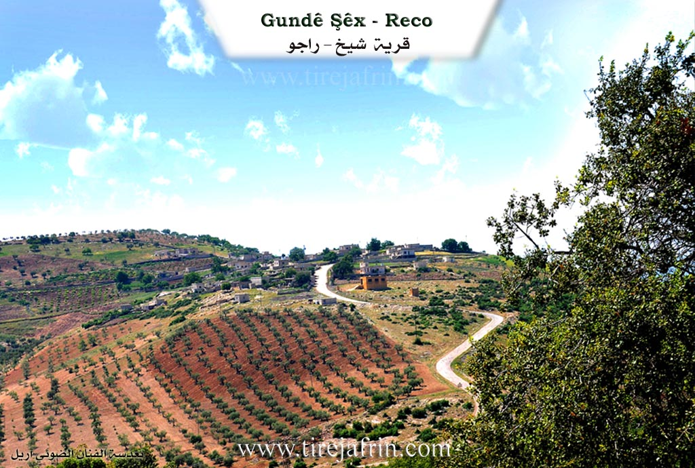
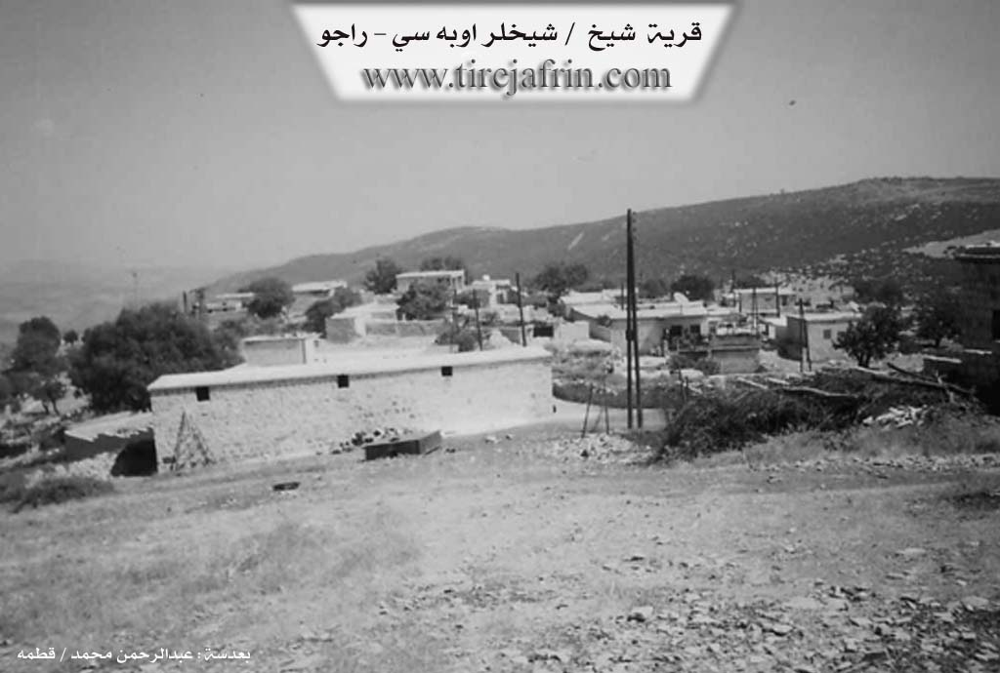

General Information
Nahiya (Subdistrict)
Reco
Also Known As
Al-Shuyukh, Sheikhlar Oba Si, Şêx, الشيوخ, شيخلر اوبه سي, شيخلراوباسي
Photos


Summaries
I. Summary from TirejAfrin Site of Şêx - Mt Hawar (English)
According to the book 'جبل الكرد' 'Mountain of the Kurds' (عفرين) geographical study:
Gu. Şêx (شيخلراوباسي), Al-Shuyukh (الشيوخ):
- Sheikh (شيخ): A religious title for one of its early inhabitants.
- Its location is west of 'Eltaniya village and it is one of the abandoned villages. [editor's note: This is almost certainly incorrect information as the "Gu. Şêx" on this page is clearly inhabited and east of 'Eltaniya. This is likely due to a conflation between a different "Gu. Şêx" in Reco and the one described here. Therefore, they may be more conflations in the data on this page.]
According to the book Afrin.... Its River and Green Hills:
Sheikhlar Oba Si (شيخلر اوبه سي): A village in Mount Kurdistan (جبل الكرد) belonging to Rajo subdistrict (ناحية راجو), Afrin region (منطقة عفرين), Aleppo governorate (محافظة حلب).
It is a small village located on a calcareous plateau covered with oak trees, with poor clay soil. It is located 17km southeast of Rajo town. It is bordered to the north by a rocky slope and deep valley planted with olive and walnut trees and Jatal Qowiyo village (جتال قويو), to the south by a mountain slope and deep valley and Tagh Oba Si village (طاغ أوبه سي), to the east by a slope and valley and Dayk Oba Si village (ديك أوبه سي), and to the west by a high mountain chain planted with olive trees and Sheikh Bilal and Koliyan Tahtani villages. The number of houses is 25 houses and its age is 250 years. The village consists of one family according to one resident's account, and the origin of this village's inhabitants is from the Ain al-Arab region who came from their region fleeing from a problem that occurred with them in that period, so they settled in this mountain elevation in the region and became Sufis in the village, so the village was named after their family Sheikhlar (شيخلر). Its old dwellings are clay and stone with wooden roofs, while the modern ones are cement spreading east near the main road. It has electricity network and a modern primary school. The village drinks from cisterns that collect rainwater during winter. The residents work in rain-fed agriculture on neighboring slopes (olives, vines) on an area of 111 hectares, alongside sheep and goat herding. It is connected to the subdistrict, region and neighboring villages by a paved road.
Among the families present in the village: Al Sheikh Ahmad (آل شيخ أحمو), and among the social figures in the village Sheikh Shukri Rashid Abdi (شيخ شكري رشيد عبدي) - Professor Mustafa Sheikh Ahmad (الأستاذ مصطفى شيخ أحمد).
Village mayor: Mohammed Sheikh Mohammed (محمد شيخ محمد)
Information sources:
1 - Book Mountain of the Kurds (Afrin) geographical study by Dr. Mohammed Abdo Ali.
2 - Book: Afrin.... Its River and Green Hills by writer Abdul Rahman Mohammed from Qatma village.
3 - Studies of Tirrej Software Center/Abdul Rahman Haji Othman (عبدالرحمن حاجي عثمان).
4 - Some village residents.
Prepared and implemented by: Director of Tirrej Afrin website: Abdul Rahman Haji Othman (عبدالرحمن حاجي عثمان)
20/12/2013
II. Summary from Ax û Walat Transcript of Şêx - Mt Hawar
VILLAGE OF ŞÊX
21.2.2016
The village of Şêx is affiliated with the Reco district of the Efrîn canton, located about 15 km east of the town of Reco and 30 km north of the city of Efrîn.
In the meaning of the name of the village (Şêx), it appears that there are religious people or sheikhs in it. Therefore, this village is known for this characteristic, meaning the traditions of the sheikhs and the affairs of the Islamic religion, such as reading the mawlid, dhikr, and religious rituals.
The name of the village comes from the name of the (Şêxan) tribe, and the inhabitants of the village are from the Wasilî branch, which is a branch of the (Rifa’î) of the Şêxan. It is said that for an unknown reason, a person named Şêx Ehmed from the village of Daşlûkê in the Kobanê region came and initially settled in the village of Dîkê, but after getting married, he built a house in a place called (Serî Gazê). Later, this place became a village known by the name of Şêx.
It is worth mentioning that the family of Şêx Ehmed is known as the Şêxler, and to this day they have not abandoned the traditions of their forefathers and continue to practice them. Weekly, the men of the village perform dhikr, and they also bury their dead with religious ceremonies.
To this day, the relations of the people of the village with their relatives in Kobanê in the villages of (Daşlûk and Mendikê) continue, and there is always coming and going between them.
There are 8 families in the village, and the foundation of all the families is one, they are:
Êho, Kalê, Evdê Seydê, Şêxê, Me’mî Êhmê, Salhê, Zilfê and the family of Şêx Ehmed.
The village of Şêx is a small village and has not grown, so there are only about 40 houses and nearly 300 people living in the village.
The villagers make their living from agriculture, and the cultivation and care of olive trees are the main products. They also plant fruit trees such as apricots, cherries, almonds, vineyards, and walnuts.
Along with agriculture, some people of the village also own livestock such as goats and sheep, and they sell their products in the markets of Reco and Efrîn.
To the east of the village are Mount Hawarê and the village of Çiyê. To the north are Mount Tizbiyê, the villages of Qêsim and Goliya, and to the south is Mount Duzelkê.
The village of Şêx is famous for its valleys and ravines; there are many valleys and ravines around the village:
Geliyê Gerê is to the south of the village, Geliyê Dibrik is to the southwest, and Geliyê Gura is to the east.
There is a shrine named (Se’bê Biçûk) to the east of the village. The people of the village visit that shrine for illness and the fulfillment of wishes.
The villagers dig around their trees, fertilize, and plant at the end of winter and the beginning of spring.
There is a primary school in the village where the children of the village study up to the 6th grade.
There is an old olive press in the village, but it is now in ruins. It is said that the oil that came from that press was better than that of the new presses.
It is worth mentioning that the foundation of all the sheikhs living in the Efrîn region is from Kobanê.
Many people in this small village have studied and continued their studies in cities and towns, because the people of the village love education very much; they see their salvation and that of their people in it. Therefore, nearly 50 men and women from the village have graduated from university in various fields, and along with that, many people have also completed institute and high school studies.
Foundation/Origin Information of Şêx - Mt Hawar
The village consists of one family according to one resident's account, and the origin of this village's inhabitants is from the Ain al-Arab region who came from their region fleeing from a problem that occurred with them in that period, so they settled in this mountain elevation in the region and became Sufis in the village.
Source: TirejAfrin Site
Founded by members of the Waslan tribe who migrated from the Kobanî region. The first settler is remembered as Şêx Ehmo, and the village's ancient cemetery is named in his honor.
Source: Afrin Flo Transcript
Possible Village Name Meaning of Şêx - Mt Hawar
Sheikh is a religious title for one of its early inhabitants. The village was named after their family Sheikhlar.
Source: TirejAfrin Site
Originally known as Doşlikê, the settlement was renamed Gundê Şêx (Village of the Sheikhs) to reflect the identity of its founders.
Source: Afrin Flo Transcript